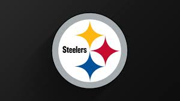

Pittsburgh Steelers Team history

The Pittsburgh Steelers were founded by Arthur J. Rooney on July 8, 1933. Now the seventh-oldest franchise in
the NFL, the Pittsburgh team was known as the Pirates until 1940. The Steelers struggled for their first
40 years without winning a championship of any kind until they won the AFC Central division title in 1972.
the 2006 season, Cowher resigned and was replaced by Mike Tomlin,
who in his second season led the team to victory in Super Bowl XLIII. The win marked their sixth championship in
franchise history as the Steelers became the first team to win six Super Bowls.